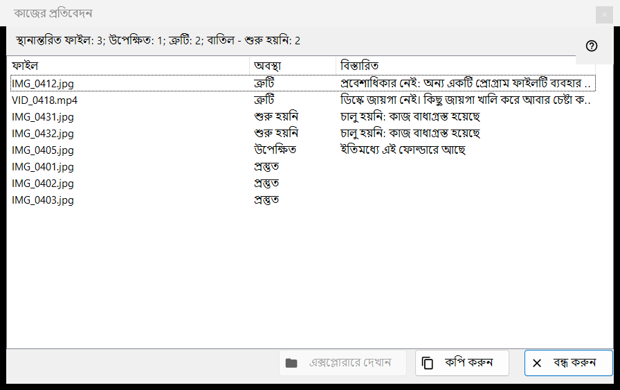
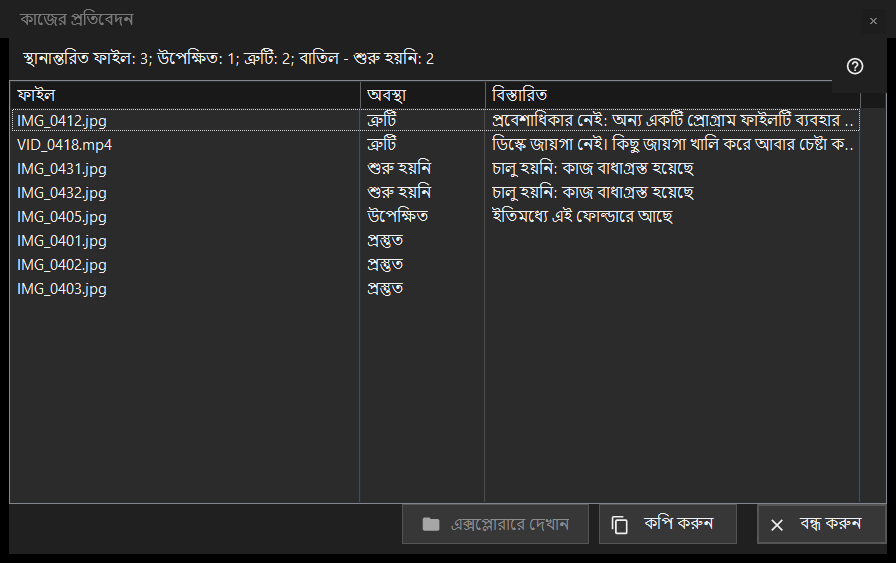

কাজের প্রতিবেদন
এটি কীসের জন্য
শেষ ব্যাচ কাজের (সরানো, কপি, মোছা বা ফেরানো) প্রতিটি ফাইলের কী হয়েছে এবং কেন কিছু বাদ গেছে বা ব্যর্থ হয়েছে তা তালিকাভুক্ত করে। এটি কখনও নিজে থেকে খোলে না: চালানোর পর থাম্বনেইল প্যানেলের (F3) নিচের প্রতিবেদন লাইনে ক্লিক করুন। রান পরিষ্কার না হলে লাইনটি বিস্তারিত দেখতে ক্লিক করুন দিয়ে শেষ হয়।


এই ক্রমে
- থাম্বনেইল প্যানেলে একাধিক ফাইলের ওপর একটি কাজ চালান।
- প্যানেলের নিচের সারসংক্ষেপ লাইন পড়ুন।
- এই উইন্ডো খুলতে লাইনে ক্লিক করুন।
- তালিকার ওপরের অংশ দেখুন: ব্যর্থতা আগে আসে।
- সারি বেছে নিন, তারপর তাদের পথ নিতে কপি করুন বা ফাইল খুঁজতে এক্সপ্লোরারে দেখান ব্যবহার করুন।
উপাদানসমূহ
সারসংক্ষেপ লাইন
লাইনটি ফল দিয়ে শুরু হয়: স্থানান্তরিত ফাইল: 5, কপি করা ফাইল: 5, মুছে ফেলা ফাইল: 5, পুনরুদ্ধার করা ফাইল: 5 বা সম্পন্ন কাজ: 5। এরপরের অংশগুলো, প্রতিটির নিজস্ব সংখ্যাসহ, কেবল তখনই আসে যখন সংখ্যা শূন্য নয়: উপেক্ষিত; ত্রুটি; ফেরানো যাবে না এমন কাজ; স্থায়ীভাবে মুছে ফেলা হয়েছে, পুনরুদ্ধার করা যাবে না; এবং রান আগে থেমে গেলে বাধাগ্রস্ত, ফোল্ডারের সাথে কোনো সংযোগ নেই - শুরু হয়নি (পরপর তিনটি ব্যর্থ সংযোগ রানটি থামায়) বা বাতিল - শুরু হয়নি।
তালিকা
কলাম: ফাইল, অবস্থা ও বিস্তারিত। সবচেয়ে খারাপ সারিগুলো আগে আসে: ব্যর্থ, তারপর শুরু না হওয়া, তারপর বাদ যাওয়া, তারপর সম্পন্ন; গোষ্ঠীর ভেতরে ফাইলগুলো রানের ক্রম রাখে। সারির টুলটিপ পুরো পথ দেখায়। বিস্তারিত ব্যর্থতার সহজ কারণ দেয়, সম্পন্ন ফাইলের জন্য গন্তব্য ফোল্ডার দেয়, পুরনো নাম নেওয়া থাকলে নতুন নাম দেয় (নতুন নাম হিসেবে সংরক্ষিত), এবং রিসাইকেল বিন এড়িয়ে মোছার জন্য স্থায়ীভাবে মোছা হয়েছে - ফেরানো যাবে না দেয়।
অবস্থা ও বাদ পড়ার কারণ
অবস্থা: প্রস্তুত; ত্রুটি; উপেক্ষিত; শুরু হয়নি। বাদ পড়া ফাইল কারণ বলে: ইতিমধ্যে এই ফোল্ডারে আছে; ফাইলটি আর ডিস্কে নেই; আর্কাইভের ভেতরের ফাইল পরিবর্তন করা হয় না; নির্বাচিত ফাইলের মধ্যে একই নাম ইতিমধ্যে বিদ্যমান; রিসোর্সটি केवल পাঠযোগ্য; এটি একই ফাইল; বা গন্তব্য ফোল্ডারে নামটি ইতিমধ্যে ব্যবহৃত। যে ফাইল শুরু হয়নি সে বলে: চালু হয়নি: কাজ বাধাগ্রস্ত হয়েছে।
এক্সপ্লোরারে দেখান, কপি করুন, বন্ধ করুন
এক্সপ্লোরারে দেখান সক্রিয় থাকে যখন একটি সারি নির্বাচিত; এটি একটি ফোল্ডার উইন্ডো খোলে যেখানে নির্বাচিত প্রথম ফাইলটি হাইলাইট করা থাকে, বা ফাইল সরে গেলে ফোল্ডারটি। কপি করুন (Ctrl+C দিয়েও) নির্বাচিত সারিগুলোর পুরো পথ ক্লিপবোর্ডে রাখে, প্রতি লাইনে একটি, অথবা কিছু নির্বাচিত না থাকলে সব সারির: সমস্যাযুক্ত ফাইলের তালিকা অন্যকে দেওয়ার একটি দ্রুত উপায়। বন্ধ করুন প্রতিবেদন শেষ করে।